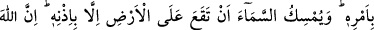
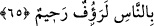
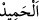

“Göklerde ve yerde ne varsa” yaratma, mülk ve tasarruf bakımından “O’nundur.
Hakikaten Allah, yalnız O zengindir” zâtında her şeyden müstağnîdir. Hiçbir zaman
kendi zâtında bir eşyaya ihtiyacı yoktur. et-Te’vîlâtü’n-Necmiyye’de der ki: “O’nun
zenginliği bağışları ile eksilmez” “övgüye değerdir” sıfatları ve fiilleri övülmeyi
gerektirir; övülmeye lâyıktır. et-Te’vîlâtü’n-Necmiyye’de der ki: “Zâtında hamd
edenlerden müstağnîdir.”
İmam Gazzâlî (r.h.) der ki: “ övülen, senâ edilendir. Allah Teâlâ kendi nefsine
hamdi/övgüsü sebebiyle ezelen, kullarının kendisine hamdi sebebiyle ebedî olarak
övülmüştür. O’nu zikredenlerin zikrine mensub olarak bu Allah’ın celâl, yücelik ve
kemâl sıfatlarına âiddir. Çünkü hamd, kemâl olması bakımından kemâl sıfatlarını
zikirdir.
65. Görmedin mi, Allah, yerdeki eşyayı ve emri uyarınca denizde yüzen gemileri
sizin hizmetinize verdi. Göğü de, kendi izni olmadıkça yer üzerine düşmekten
korur. Çünkü Allah, insanlara çok şefkatli ve çok merhametlidir.
“Görmedin mi, Allah, yerdeki eşyayı ve emri” kolaylaştırması ve dilemesi “uyarınca
denizde yüzen gemileri sizin hizmetinize verdi.” Yâni yerde olan şeyleri sizin emrinize
verdi, faydalanmanız için hazır kıldı. Onlar hakkında dilediğiniz şekilde tasarruf
edersiniz. Taştan daha sert, demirden daha çetin, ateşten daha korkulu bir şey yoktur ki
emrinize ve hizmetinize verilmiş olmasın.
“Göğü de, kendi izni” yâni dilemesi “olmadıkça yer üzerine düşmekten korur.” Allah
göğü tutulmasını gerektirecek bir şekilde yaratmıştır.
Râğıb der ki: “Bir şey hakkında izin, ona müsâade ettiğini ve ruhsat verdiğini
bildirmektir.”
Allah’ın göğe bu izni vermesi kıyâmet günü olacaktır. Burada göğün kendiliğinden
durduğu reddedilmektedir. Çünkü onun cisimlik bakımından diğer cisimlerden farkı
yoktur. Diğer cisimler gibi o da eğilip düşmeye kabiliyetlidir.
Fakir (Bursevî) der ki: “Bir kitapta gördüğüm şu hâdise şaşılacak şeylerdendir: Bir
kuş her gece sabaha kadar ağaçtan ayağıyla sarkar ve göğün üzerine düşmesinden
korkarak feryad eder. Bunun bir benzerini Hâfız zikretmiştir. Turna yere iki ayağı ile
değil sadece biriyle basar. Tek ayağını yere bastığı zaman yerin çöküp batmasından
korkar. Güvenmediğinden yere sağlam basmaz. Bu iki hususta basîret sahipleri için ibret
vardır.